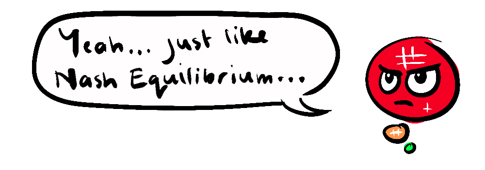
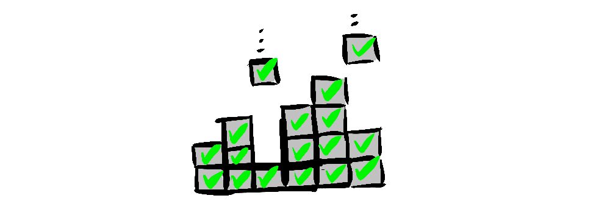

~ how pareto efficiency can make everyone better off (sometimes) ~
One silly little thing I've always done is, when boiling the kettle, I always try to fill it the least amount possible. My logic is that it is quicker, uses less power and creates less condensation, there is nothing I could do that would make it any more efficient. Little did I know, I have been being Pareto Efficient.
Named after Italian economist Vilfredo Pareto, an allocation of resources is considered Pareto Efficient if there is no way to make any one individual better off without making at least one individual worse off.

Note, this is not on a continuum, a situation can not be more or less Pareto Efficient. A situation is either Pareto Efficient or it is not.
If you and I cooperate at making a meal (allocating our time and effort) and we are able to execute the meal more effectively together, we might have found Pareto Efficiency. But what if, as well as cooperating, we find a division of labour that capitalises on our unique skills?
Perhaps you craft a colossally decadent lasagne while I make a life-affirming mint-slice. Working on our respective specialties, we can not only create a great deal of calories, but make them their most delicious. Once there is no other way to improve the allocation of our time and effort without making either of us, or our guests worse off, then the situation is Pareto Efficient.
As a web-developer (of sorts) I've noticed the practice of embedding content from one site into another is Pareto Efficient. The website embedding the content enriches its user experience, while the original content creator gets additional visibility and potentially more traffic.
But Pareto Efficiency is not just a trivial personal convenience, it plays out on the world stage, with grand implications.
HIGH-STAKES EXAMPLES OF PARETO EFFICIENCY
- Trade Agreements: Nations are able to trade for goods they have in surplus in order to gain goods they don't have, achieving mutual benefits.
- Vaccination and herd-immunity: Protecting the health of individuals also benefits the health of the collective, because fewer people become vectors for disease spread.
- Environmental Policies: Often, encouraging alternative energy sources leads to a healthier environment and innovation.
Pareto Efficiency is a useful tool, in various fields, for analysing the interdependent nature of a situation to achieve an optimal outcome.
Pareto Efficiency is about the overall allocation of resources. Nash Equilibrium, where no rational agent can make their own position better by deviating from their current strategy, sounds similar, but is about the interaction of self-interested rational agents in competition. You could say Nash Equilibrium is ground up, where Pareto Efficiency is top down.
For example: In a single instance of the prisoner's dilemma, a Nash Equilibrium is reached by both parties defecting, because they cannot make their individual payoff any better by cooperating. However, Pareto Efficiency is reached if both parties cooperate, because it has a greater payoff for both parties without making the other worse off.
In many cases, a Pareto Efficient game will be a positive-sum game because it is dependent on the optimal allocation of resources, up to the point that any one party is worse off than they began. And there in lies an issue, there are some situations where an initial imbalance in a system cannot be addressed by Pareto Efficiency, and may not become positive-sum.

Pareto Efficiency doesn't necessarily mean "equity" or "justice" or even "positive-sum". For example, if one person has all the resources and everyone else has none, it is still considered Pareto Efficient because taking anything away from the rich person to give to someone else would make the rich person worse off.
Come to think of it, I'm wondering if a change that could perpetually make the rich person even richer without any change to those with nothing would be also called Pareto Efficient. What do you think?
In some cases, Pareto Efficiency could be seen as a principle that simply maintains the status quo. So, it's important to acknowledge that the Pareto Principle is not a solution to the world's problems, it is simply a first question to ask; can we make this situation better without it costing anyone anything? And this is sometimes the only politically available question. However, finding Pareto Efficient arrangements for more and more situations is a positive-sum pursuit.
By making small, optimized choices, we contribute to a collective good that benefits everyone in the long run. Of course, it's important when employing this in your own life not to focus only on easy cost-less wins at the expense of sacrifices that might make greater achievements possible.
Pareto efficiency is more than just an economic theory; it's a lens through which we can re-examine societal norms, interactions, and even our daily choices. While not a silver bullet for the complexities of fairness or social justice, it serves as a useful starting point for dialogue and finding potential improvements.